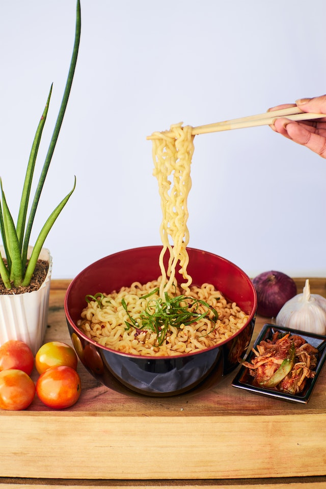

Miojo

Descrição
Receita básica para preparar o clássico miojo
Ingredientes
Pacote de Miojo
Água
Tempero
Instruções
Ferva a água na panela
Coloque o Miojo na panela
Deixe cozinhando por 3 minutos
Coloque o tempero
Coma!